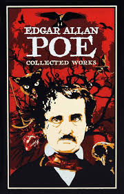

Edgar Allan Poe
La obra de Edgar Allan Poe destaca por una serie de aciertos brillantes, que en ocasiones, son
fruto de su condición de visionario descontrolado y en otras de su faceta como periodista y
observador de la época.
$150.000

El Perfume
Narra la vida de Jean-Baptiste Grenouille, «uno de los hombres más geniales y abominables de su
época», que su autor ubica en la Francia del siglo XVIII. Desde su nacimiento, Grenouille
descubre y percibe el mundo a través del sentido del olfato, que tiene más desarrollado que el
resto de las personas.
$100.000

Señor de los Anillos
La novela narra el viaje del protagonista principal, Frodo Bolsón, hobbit de la Comarca, para
destruir el Anillo Único y la consiguiente guerra que provocará el enemigo para recuperarlo, ya
que es la principal fuente de poder de su creador, el señor oscuro Sauron.
$20000